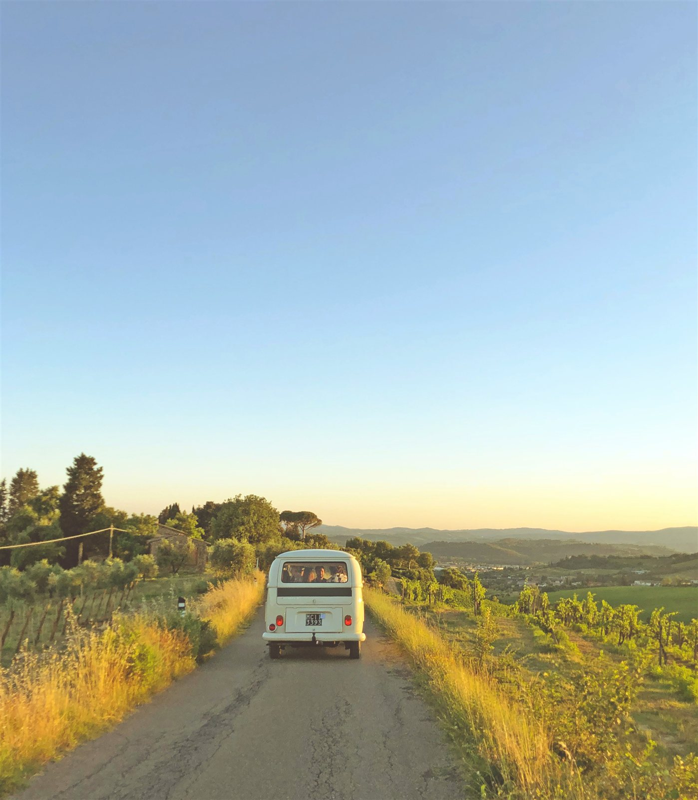
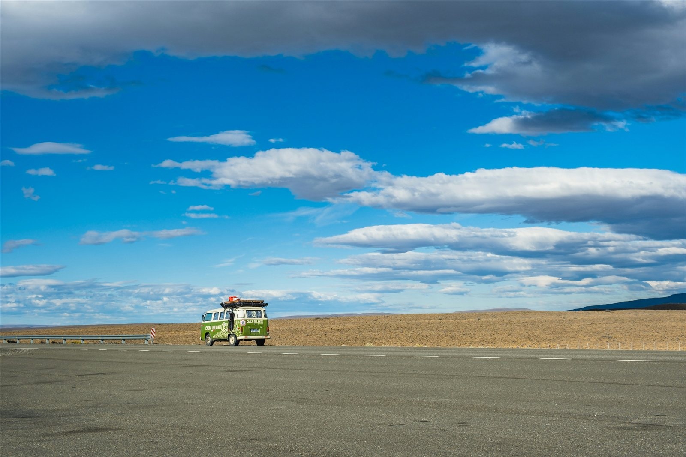

하늘
밤하늘에 별이 빛나는 모습이나 노을이 지며 하늘이 황금빛으로 물드는 게 좋아서 골랐다.
손
예술적인 동작이나 요소가 가미된 손이나 장신구를 착용하고 있는 손이 좋아서 골랐다.
길
여행을 떠나거나 떠난 모습을 연상시키는 것이 좋아서 골랐다.


고른 이유
같은 단어로 찾았는데, 나는 왜 이 5장을 골랐을까?
하늘
밤하늘에 별이 빛나는 모습이나 노을이 지며 하늘이 황금빛으로 물드는 게 좋아서 골랐다.
손
예술적인 동작이나 요소가 가미된 손이나 장신구를 착용하고 있는 손이 좋아서 골랐다.
길
여행을 떠나거나 떠난 모습을 연상시키는 것이 좋아서 골랐다.